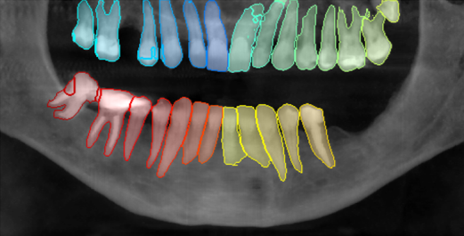

CentraleSupélec
Mention Science des données et de l'information

En dernière année à CentraleSupélec, j'ai choisi la mention science des données et de l'information, dans la dominante Mathématiques et Data Science.
J'ai suivi de nombreux cours de mathématiques, statistiques, Machine Learning et Deep Learning, et les mettre en pratique dans des projets.
J'ai aussi suivi en parallèle le master MVA avec l'ENS Paris-Saclay, où j'ai choisi des cours de Deep Learning pour compléter mes connaissances.
Projet de recherche en Computer Vision
Computer vision
Recherche
Domaine Médical
J'ai eu l'occasion de réaliser un projet de recherche pendant 6 mois en binôme, en partenariat avec un chercheur
du CVN (laboratoire de computer vision de CentraleSupélec) et une start-up. Le but était de développer une méthode
permettant de segmenter et d'identifier les dents dans un scan 3D de la mâchoire, pour aider les dentistes dans leurs analyses.
J'ai appris plein de choses sur le domaine dentaire, et médical de façon générale. J'ai gagné
en expérience en computer vision, particulièrement en segmentation.

Deep Learning
Self-supervision
NLP
Reinforcement Learning
Generative models
Diffusion
Machine Learning
Regression
Classification
Clustering
Mixture models
Graphical models
Apprentissage supervisé/non supervisé
Apprentissage par renforcemeent
Q-Learning
Monte Carlo Control
Temporal difference Control
Off-Policy Learning
Deep Q-Learning
PPO
Morphologie Moderne
Traitement d'image morphologique
Dilatation/Erosion
Ouverture/Fermeture
Algorithme de partage des eaux
Random Walker
Autres cours
Mathématiques : Intégration, convergence, probabilités, Equations aux dérivées partielles, intégration stochastique
Statistiques : estimateurs, inférence bayesienne, inférence de confiance, estimation de densité, kernels à noyaux, bootstrap
Algorithmie : Parcours de graphes, arbres couvrants, arbres de flot, programmation dynamique, théorie de la complexité
Physique : Matériaux, Mécanique des milieux continus, physique quantique, rayonnement et propagation
Optimisation, modélisation, traitement du signal